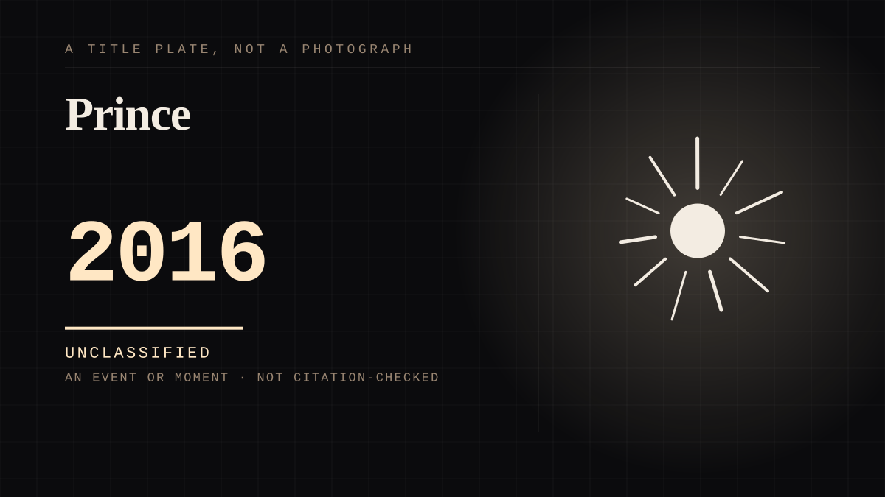

An event or moment · 2016 · Music
Prince
A death announced through an initialism, and a global response before anybody knew the details.

Grief engineered to announce itself, and the parasocial bond used deliberately as a broadcast channel by the person who had it.
Where it sits
2010 2010+ · 2016 2026
Provenance · 7 source record(s)
- retrievable21 April 2016, pronounced dead at 10:07 a.m. at Paisley Park, age 57 - and the announcement carried NO CAUSE OF DEATH. The publicist's statement said only: 'There are no further details as to the cause of death at this time.' The response assembled before anybody knew anythingCBS News, Prince dead at 57 (21 April 2016); AP; Reuters. ↗
- retrievableTHE SCALE OF THE ASSEMBLY, AND IT WAS AT HIS HOUSE: fans in purple head to toe, some draped in velvet, laying flowers at the fence in the rain, and a reported TWO-MILE LINEUP to drive past the compoundCBS News (2016), citing photographs and CBS Minnesota; NPR, Music Legend Prince Dies At Paisley Park Residence (2016), from Minnesota Public Radio. ↗
- unverifiedTHE ASSUMPTION OF PERMANENCE, said by a fan on the day: 'I just always felt like he was always going to be here because he's always been here ever since I came here. I mean, he's just been a staple of the city, and I thought this guy's going to be around forever'Melody Chestler, interviewed by Minnesota Public Radio, reported in NPR (2016).
- unverifiedA journalist on the scene describing the register of the crowd, which is the point of the entry: the news rippled around the gathering and 'we were all just trying to support each other' - with the journalists crying and hugging each other among the fansAndrea Swensson, Minnesota Public Radio, reported in NPR (2016).
- unverifiedThe civic layer: a Minneapolis radio station played nothing but Prince from midday onward, running the discography chronologically, and the club where Purple Rain was filmed held an all-night dance in his honour, with people leaving bouquets, balloons and a guitar under the starCBS News (2016), citing The Associated Press.
- unverifiedAND THE LINE THAT MAKES THE ENTRY: five days before he died, at a dance party at Paisley Park, with his health already being reported, he told the crowd: 'Wait a few days before you waste any prayers.' He addressed his own obituary five days earlyCBS News (2016).
- unverifiedAnd the announcement arrived as the fans themselves describe it - through hashtags and photographs moving faster than any official channel: #RIPPrince, #paisleypark, 'Doves crying. Thanks, @prince'CBS News (2016), citing contemporaneous tweets.
Connected · 2 out, 2 in
Grieving a person you never metcites · 1970 · A mechanism or tacticKurt Cobainof the same time as · 1994 · An event or momentKurt Cobainof the same time as · 1994 · An event or momentKobe Bryantof the same time as · 2020 · An event or moment
Reported as a story
Researchers studied Neighbours fans and found the same grief markers as a breakupABC on the finale. It reads as a light story and it is not, particularly.A woman died in Seoul and by the next day the argument was about whether the fandom was toxicThe pivot from a death to a discourse about ourselves, in about a day, in front of a diaspora that had to watch it happen.
It sits in
The full timeline → · The database → · See it in the atlas →